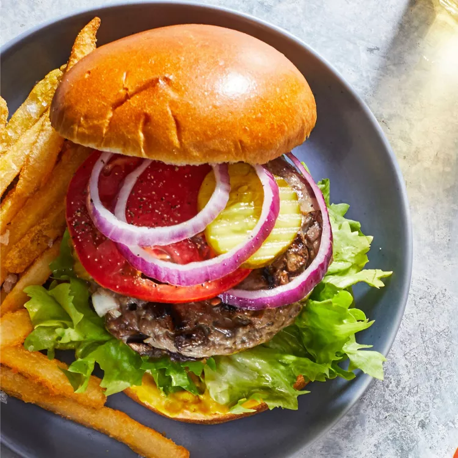

Hamburger

Description
Here's how to grill the perfect burger — from getting the meaty mixture
right to forming the patties. We'll also looks at grill temps and times.
Let's get grilling!
When a burger's done right, you know it — the smoky, char-grilled outside
and the juicy inside, all barely contained within a chewy, toasty roll.
That's what a burger is all about. But as simple as it might sound, there's
more to grilling burgers than just slapping it on the grill. We'll show you
how to grill the perfect burger — from getting the meaty mixture right to
forming the patties so they don't shrink. We'll also looks at grill temps and
times. Let's get grilling!
Ingredients
- 1 large egg
- ½ teaspoon salt
- ½ teaspoon ground black pepper
- 1 pound ground beef
- ½ cup fine dry bread crumbs
- Sliced Onions
- Sliced Tomatoes
- Sliced Lettuce
- Yellow Cheese
- Sauce of your choice (Ketchup, Mayonnaise, etc)
Steps
- Preheat an outdoor grill (or stove) for high heat and lightly oil grate.
- Whisk together egg, salt, and pepper in a medium bowl.
- Add ground beef and bread crumbs and mix with your hands or a fork until well blended.
- Form into four 3/4-inch-thick patties.
- Place patties on the preheated grill. Cover and cook 6 to 8 minutes per side, or to desired
doneness. An instant-read thermometer inserted into the center should read at least 160
degrees F (70 degrees C).
- Serve hot and enjoy!